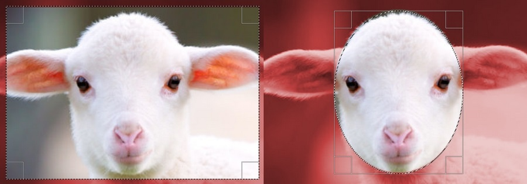
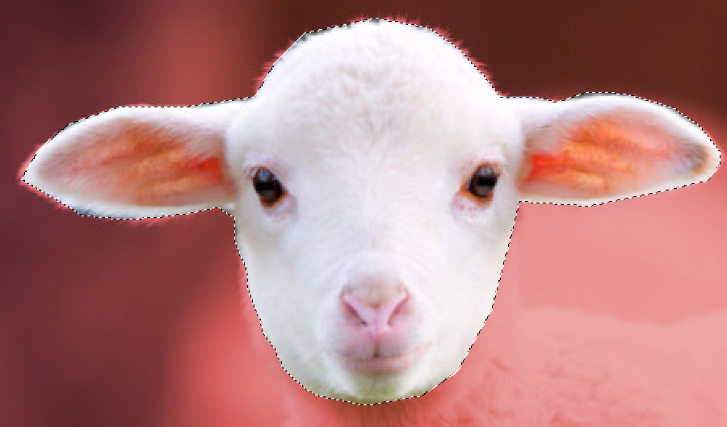
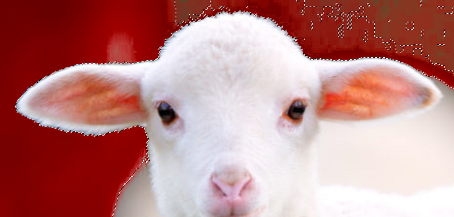
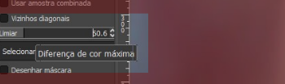
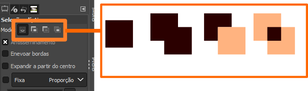

As ferramentas de seleção com formas básicas como elíptica e retangular são utilizadas para seleção rápida de áreas de uma imagem, vejamos como utilizar.
Seleção Retangular e Seleção Elíptica:
1. Inicie o GIMP e abra nele uma imagem de sua preferência.
2. Pegue a ferramenta Seleção Retangular, que é a segunda ferramenta na Barra de Ferramentas.
Se não encontrar uma ferramenta clique e segure no conjunto para ver as outras opções.
3. Clique e arraste sobre a imagem para criar uma seleção.
4. Ajuste se necessário.
5. Pressione Enter para finalizar.
6. Remova a seleção e experimente o mesmo com a ferramenta Seleção Elíptica que se encontra no mesmo conjunto.
Para remover uma seleção pressione Ctrl+Shift+A
A Seleção de Laço ou Seleção Livre é a mais utilizada em softwares de edição de bitmaps, pois permite desenhar uma forma ao redor da área da imagem que desejamos editar.
1. Inicie o GIMP e abra nele uma imagem de sua preferência.
2. Pegue a ferramenta Seleção Livre, que é a terceira ferramenta, ou que consta dentro do conjunto.
3. Clique num ponto da tela.
4. Vá clicando para criar uma forma ao redor da área que deseja selecionar.
5. Pressione Enter para finalizar.
A seleção de laço (Seleção Livre) geralmente requer ajustes constantes do zoom, e é melhor utilizada com um zoom maior sobre a imagem.
A Varinha de Seleção, Seleção Contígua ou Varinha Mágica a depender do software utilizado é uma ferramenta que seleciona um conjunto de pixels com cores semelhantes, baseado em um valor de tolerância, sendo que um valor maior selecionará mais cores e um valor menor selecionará menos cores.
1. Inicie o GIMP e abra nele uma imagem de sua preferência.
2. Pegue a ferramenta Seleção Contígua, que é a quarta ferramenta ou que se encontra dentro do conjunto.
3. Clique num ponto da imagem para selecionar toda a área com cor semelhante.
4. Na Barra de Propriedades, logo abaixo da Barra de Ferramentas, altere o valor do Limiar e selecione novamente:
Para qualquer ferramenta de seleção, temos três modos de seleção que modificam como uma nova seleção é tratada. Estes modos de seleção estão disponíveis na maioria dos softwares de edição de imagem e são: Normal, Adicionar, Subtrair e Interseção.
Normal:
Uma nova seleção substitui a seleção anterior.
Adicionar:
Uma nova seleção é adicionada à área selecionada anteriormente.
Subtrair:
Uma nova seleção recorta a seleção anterior (é o modo de remover seleção)
Interseção:
Uma nova seleção é interseccionada à seleção anterior (a área selecionada resultante é apenas a sobreposição entre as duas seleções).
A depender do software pode haver ainda mais modos ou um ou outro pode não constar, os mais importantes são a Seleção Normal, o Modo de Adição e o Modo de Subtração ou Remoção.
No GIMP os modos podem ser alternados na Barra de Propriedades logo abaixo da Barra de Ferramentas:
